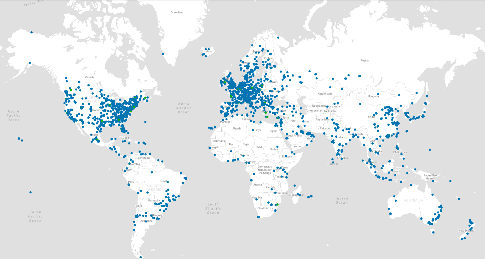
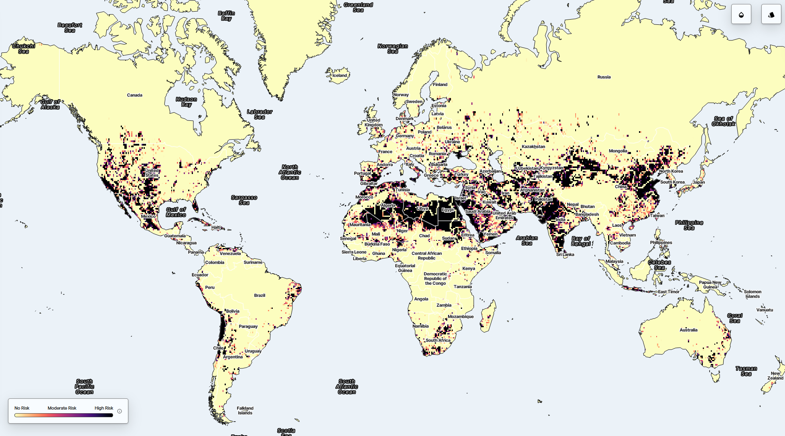

The Indirect Impact
Precision Agriculture
AI-driven farming techniques can lead to overuse of fertilizers and pesticides, affecting nearby ecosystems.
E-Waste
Outdated GPUs, servers, and cooling systems contribute to growing piles of tech-based waste.
Rare-Earth Minerals
Extracting elements like lithium, cobalt, and neodymium raises ethical and ecological concerns worldwide.
The Hidden Cost of AI
A Looming E-Waste Crisis
The explosive rise of generative AI—transforming industries from tech to healthcare—has captivated the world with its potential. But behind the rapid adoption of large language models (LLMs) like ChatGPT and other generative tools lies an emerging environmental crisis: a surge in electronic waste (e-waste). According to a recent study published in Nature Computational Science, aggressive expansion of LLMs could generate 2.5 million tonnes of e-waste per year by 2030. This figure excludes other forms of generative AI, suggesting the real number could be even higher.
Why AI’s Hardware Hunger Matters
AI development doesn't just happen in the "cloud"—it relies on powerful physical infrastructure. GPUs, CPUs, memory modules, batteries, and circuit boards all support AI's processing power. With the average lifespan of data center hardware shrinking due to constant upgrades, discarded electronic equipment is piling up at an alarming rate. Dr. Asaf Tzachor, a sustainability researcher and coauthor of the study, notes: “AI doesn’t exist in a vacuum; it relies on substantial hardware resources that have tangible environmental footprints.” In 2022 alone, the world generated 62 million tonnes of e-waste, growing five times faster than the ability to recycle it, according to the UN Global E-waste Monitor. Generative AI is poised to contribute significantly to this stream if current trends continue.
Data Centers: The Unsustainable Backbone of Generative AI
Data centers—critical to AI development and deployment—are becoming some of the world’s largest electricity consumers. In 2022, data centers globally consumed 460 terawatt-hours (TWh) of electricity, placing them between France and Saudi Arabia in national power consumption rankings. By 2026, this could soar to 1,050 TWh, moving them into the top five global consumers of electricity. As MIT’s Noman Bashir explains: “Generative AI training clusters can consume 7 to 8 times more energy than traditional computing workloads.” Even inference—the use of trained AI models to respond to queries—demands substantial energy. A single ChatGPT query consumes about five times more power than a Google search.
Water Use and Biodiversity Risks
Generative AI’s impact goes beyond electricity. Cooling data centers requires massive amounts of water—two liters for every kilowatt-hour consumed. This can strain local water supplies and threaten ecosystems, particularly in arid regions where many new data centers are being built.
The Hardware Lifecycle: A Carbon Multiplier
The environmental toll of AI isn’t limited to its operation. Manufacturing advanced chips like GPUs requires high energy inputs and toxic materials. Market research firm TechInsights reports that 3.85 million GPUs were shipped to data centers in 2023, up from 2.67 million in 2022. The trend is only accelerating. With each upgrade cycle, more equipment is discarded. Delaying chip upgrades by even one year can increase e-waste by 14%, according to the Nature study. And due to export restrictions, many countries can't access cutting-edge chips—further increasing waste from inefficient hardware.
What Can Be Done?
While the industry is moving fast, sustainable practices have yet to catch up. Tzachor suggests “downcycling”—repurposing outdated servers for less intensive workloads or educational use—as a key mitigation strategy. Several major tech firms have announced green energy goals and carbon-neutral plans. Microsoft is one of the few to include e-waste reduction in its data center strategy. But researchers argue that voluntary commitments may not be enough. “Companies should have incentives to adopt these strategies,” Tzachor says. Regulation may be needed to ensure compliance.
Global Hotspots
Explore global maps of AI-related infrastructure:
Global datacenter locations
Areas with with water stress. Darker color means more stress
Citations
Katherine, Bourzac (2024) Generative AI Has a Massive E-Waste Problem. IEEE Spectrum FOR THE TECHNOLOGY INSIDER. Adam, Zewe (2025) Explained: Generative AI’s environmental impact. MIT News.